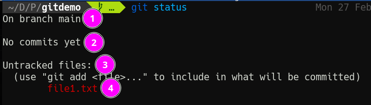
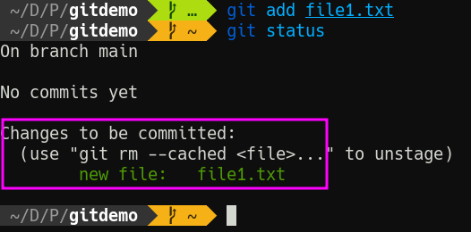
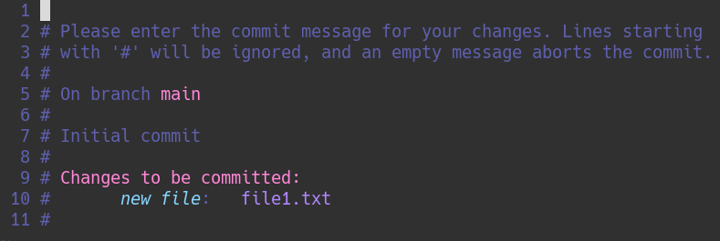
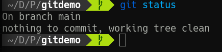
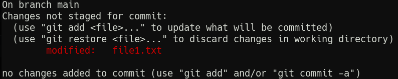
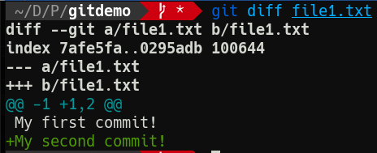
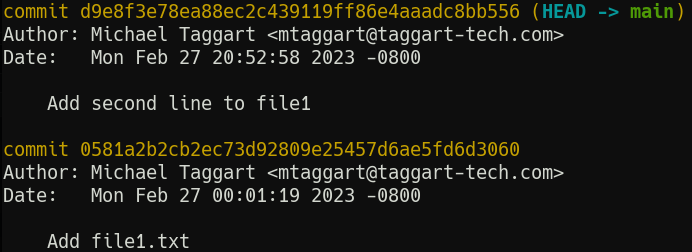

The Git Core Loop
Let's define it right up top:
- Create
- Stage
- Commit
When working on a project in a Git repository, we begin by creating the content we want. This could be new files or edits to existing files—even deletions of files. Once creation is finished for a specific goal, like a new feature, chapter, or a bugfix, we stage the changes—selecting what will be included in this chapter of the project's history. Finally, we commit the changes to the timeline with a message to the future about whatever it was we did in this set of changes.
A Useful Metaphor
I like to use the space shuttle as a metaphor for the steps of the Git Core Loop.
Create: The VAB

The Vehicle Assembly Building is where the components of a shuttle launch were combined: liquid fuel tank, solid rocket boosters, and the shuttle itself.

This is equivalent to making the changes that are part of a commit.
Stage: The Crawler
The Mobile Launch Platform, colloquially known as "The Crawler," moved the assembled shuttle from the VAB to the launchpad. This process took days—hopefully our commits won't!

This is where we stage our changes for commit, but don't yet enter them into history.
Liftoff

Let's light this candle! The shuttle's main engines and solid rocket boosters power it into low earth orbit.
This is where we commit our changes to history.
I'll stop here before completely overextending this metaphor. Hopefully it's helpful. But now, let's actually do some work.
Our First Commit
Let's head on over to our gitdemo folder/repo to do some work.
To start, let's create a new file by outputting text via the terminal:
echo "My first commit!" > file1.txt
And now, it's time for our first (and arguably most important) Git command:
git status
Your output should look something like this:

- Git tells us what branch we're on (more on branches later).
- This won't be here for long, but Git now tells us we haven't made any commits.
- We do however have untracked files—files Git has no idea about.
- Here are those files.
As the command suggests, let's run git add file1.txt to add the file, and run git status again.

Now Git tells us we have changes "to be committed." Put another, we have staged changes. Put yet another way, we have rolled the shuttle out to the launchpad.
We are go for launch. Run git commit and don't freak out at what happens.

A text editor (whichever one is defined in the $EDITOR environment variable) pops up. For me, it's Vim. For you, it may be Nano. This is the long-form way of writing commit messages, where we briefly describe what we did. In this case, we might consider a simple note like "Add file1.txt". Write that message, and then save/quit from the editor.
Then, run git status one more time.

We have made history! It might not seem momentous, but the timeline of our repo has begun. Run git log to see it in all its glory.
commit 0581a2b2cb2ec73d92809e25457d6ae5fd6d3060 (HEAD -> main)
Author: Michael Taggart <mtaggart@taggart-tech.com>
Date: Mon Feb 27 00:01:19 2023 -0800
Add file1.txt
Now, your log won't look exactly like this one, but it will have the same parts. In order:
- A unique commit hash and a reference that links the commit to a branch, and marks it as the most recent commit (
HEAD) - Author information
- A timestamp
- The commit message
There are other ways to view the log and we'll explore them soon. For now, just know that this is how we can see exactly what has taken place in our project's history.
Our Second Commit
The first commit is cool, but the second commit? That's when the good stuff happens. Let's make another change.
echo "My second commit!" >> file1.txt
Let's see that git status now.

Hey hey, something got modified and Git noticed it. Let's stage that change one more time with git add file1.txt.
Before we make our next commit, let's review the changes so far in detail. git diff, or git diff <file> will tell us exactly what's changed since the last commit. Try git diff file1.txt.

Git is telling us a new line has been added since the last commit. Which, yeah, it has. This is obviously a very simple change, but I find it handy to use git diff to check just what's changed before I make the commit. That helps shape the commit message.
Speaking of commit messages, let's try a slightly quicker method for this one. By passing the -m option and a message, we can avoid entering the text editor for the commit message.
git commit -m "Add second line to file1"
Notice what Git tells us after this:
[main d9e8f3e] Add second line to file1
1 file changed, 1 insertion(+)
The "insertion" is Git recognizing that the file has changed by way of addition.
Viewing Histoy
With two commits under our belt, let's view our history so far with git log.

You're probably wondering about that glob of letters and numbers.
When Git makes a commit, it takes the content, adds a special header, and creates a SHA-1 hash. This hash becomes the "id" of the commit. We'll use these more later; what's important now is that they are unique to each commit.
Each commit has author information (remember those git config --global commands?), as well as a timestamp and, of course, the commit message.
You can see an abbreviated version of the log with git log --oneline.
Now that we're familiar with the Git Core Loop, in the next lesson we'll review some best practices for commits.
Check For Understanding
In your own words, describe the Git Core Loop.